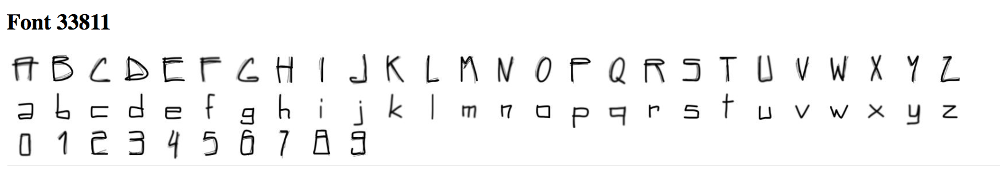
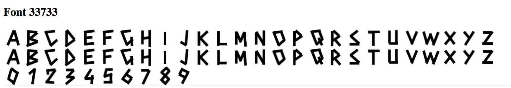
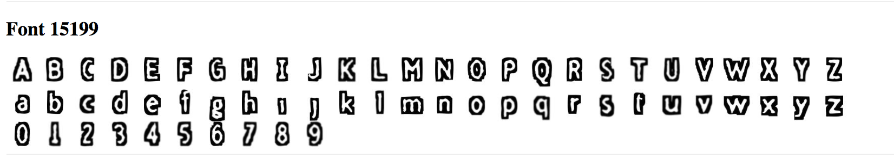

Assignment 4: Embeddings and Generative Models
Due Wednesday October 10th at 10 AM
1.1 Visualizing Datasets using the Embedding Projector
Problem 1: Spend some time using the embedding projector to make and share observations about the MNIST data. Do the different digits separate into distinct clouds? Are there images that are in the wrong cloud, and can you make sense of why they are wrong? Are there images that are outliers from the rest of the data? Are there digits that seem more separate from the others, and are there pairs of digits that are more easily confused?
The different digits do seperate out into seperate clouds, with some outliers present in cases where the digit could be misclassified due to the way they are written (slanted, enlarged, etc) which makes them look like another digit. These observations happens for both projection methods PCA and t-SNE.
Principal Component Analysis maps the data onto the dimensions along which the data has the greatest variation, the next greatest variation, and so on. On the other hand, t-SNE (t-Distributed Stochastic Neighboring Entities) chooses 3 axis such that the distances between the projected points in 3 dimensions are close to the distances between the points the high-dimensional space. This is done by an iterative computation where the distance difference is reduced step by step. Due to this difference between the two methods, PCA has a greater tendency to misclassify numbers as other numbers as it chooses the directions with the greatest difference between them.
You can see the cloud generated by PCA here:
You can see the cloud generated by t-SNE here:

The pairs of digits that are most easily confused include 0 & 2, 0 & 9, 2 & 7, and 3 & 8.
The digits that are most distinct include 1, 6, and 2.
1.3 Word Geometry
Problem 2: Remember that this geometry is not based on any word definitions, but rather only the frequencies with which words co-occur in phrases. Also keep in mind that the vertical positions of the words are random, although you can specify these, too, by setting “up” and “down”. Experiment with various words to see if you can identify any insights about the data set. For example, try “politics” along the dimension from “bad” to “good”, or “engineer” along the spectrum from “man” to “woman”. Write up some notes on your observations, perhaps supplemented with a few pictures. Do you get different or better results if you use Word2Vec All instead of 10K? Did you find any interesting examples that speak to how words are used news articles?
To begin, I ran an experiment with the word "islam" along the dimension from “bad” to “good”. For the word islam, I get the words "worship" and "spiritual" on the good side, and the words "palestine" and "militant" on the bad side. I find this to be very interesting and also confusing, as I am not sure what they are using as their metric of good and bad. However, it makes sense wit how Islam is protrayed in the news and media.
I also tried out the word "engineer" with man and woman on either side. Its interesting how on the side with woman, you see the words "artist", "dancer", whereas on the side of man you see "inventors" and "electronics".

When trying this experiment with the Word2Vec All dataset instead of the Word2Vec 10K dataset, I do not get better results but very different ones as now the sample size to check for frrequencies with which words co-occur in phrases is smaller. I got more skewed results
1.4: Finding Word Analogies with Vector Algebra
Problem 3: Spend a few minutes experimenting with the demo on https://rare-technologies.com/word2vec-tutorial/ (under “Bonus App”) which uses Word2Vec vector algebra to solve analogies. Make a note of any interesting examples you find.
I tried to ask very simple analogies to the model and it performed pretty well as shown:


However with more complex things, it is interesting that the demo is very sensitive to capitalization and even order of the words as shown below:

If the relationship between the first two words is not clear, the model returns the most similar word or the same word as shown below:
1.5: Exploring fonts with the Embedding Projector
Problem 4: Navigate to this link to look at different embedding spaces for fonts: goo.gl/F3tjgs.
1. View the fonts with PCA embedding. Do you see any clumps/areas with obvious characteristics? Record a few Font IDs for distinct characteristics/groupings that you find interesting (hover over a character to get its font ID), such as bold, italics, cursive...etc. You will use this in the homework.
Some of the clumps I see if for fonts that have more white area in the image. Some of the font IDs for distinct characteristics/groupings include those that are mostly black (5925, 5352) or those that are not of any font but are straight lines (4814 and 4829).
2. Change to the embedding to T-SNE. Record how many iterations you let T-SNE run for for and whether or not you were able to get interesting groupings. Again, record Font IDs for interesting fonts/groupings.
I let T-SNE run for 250 iterations and got a couple of interesting groups as shown:
Clump 1: (Font IDs 7018, 433, 4854) - Tilted Font

Clump 2: (Font IDs 7835, 2811, 4417) - Very Bolded Font
3. Find a font you like, get its ID, and type that into the search bar at the right-hand side of the screen. Use the "neighbors" slider to isolate a few dozen points and record the Font IDs of the 10 nearest neighbors that make sense. Repeat this for 3 or 4 fonts. If you find a font that doesn't have nearest neighbors that look similar, note that down as well.
Chosen Font: 6835. 10 Nearest Neighbors: 4720, 4749, 3438, 65, 2477, 5309, 6223, 3441, 2871, 4919,
Chosen Font: 3659. 10 Nearest Neighbors: 7440, 2154, 7134, 96, 7439, 72, 4065, 2609, 6058, 7243
Chosen Font: 5926. 10 Nearest Neighbors: 5925, 1627, 2182, 2180, 2818, 5753, 5313, 3730, 3722, 4619
2.3: Creating New Fonts
You will be modifying the latent space explorer code to create new fonts with various characteristics.
Problem 0:
Edit FontModel.js so another character besides "r" is being displayed as the sample character for the 40 attributes. Edit Alphabet.vue so that all of the uppercase, lowercase, and numerical sample font characters are displayed in the right side of the screen instead of just the lowercase characters. Take a screenshot for your writeup.
I changed the character displayed as the sample character for the 40 attributes from r to m. I also edited Alphabet.vue so that all of the uppercase, lowercase, and numerical sample font characters are displayed in the right side of the screen instead of just the lowercase characters.

Problem 1:
Edit VectorChooser.vue to add a new button under the "Apply vector math" button. The new button should show the font Id of the "nearest neighbor" font that is "most similar to" the current font, out of all the fonts in the 50K training set.
The new button is shown below.
The file deeplearnjs/demos/latent-space-explorer/embeddings.json contains a large array where the 0th element is the 40-dim vector for font Id 0 and so on for all 50K fonts.
As mentioned in lecture for Assignment 1, the similarity of two vectors can be taken to be the "cosine similarity" which ranges between 0 and 1. This can be computed as the absolute value of the dot product of the two vectors, divided by the product of the norms of the two vectors. Compute the similarities of the current font to each of the 50K fonts. We use console.log to record the similarity values and the font IDs as you generate them.
The similarity shown on the console is displayed here:
After navigating to the website: https://courses.csail.mit.edu/6.s198/spring-2018/fontfinder/.
We see the nearest neighbor font below:
Code found in VectorChooser.vue below.
Problem 2:
What is the “average” of a set of fonts? (Hint: What does that mean in terms of the 40 dimensions)? Write some code to Find the nearest font neighbor to the average font.
I wrote the averageFont() function in VectorChooser.vue, got the following array:
[-0.000124320141856429, 0.000022525580738627565, 0.000646677839355725, 0.0004773265256703026, 0.0004433987218218819, 0.00008797250749145697, -0.0005086097026959425, 0.00016423043132669852, 0.0008733155023525235, 0.00021128469573056908, 0.00021851315825218665, 0.0005214037718991349, 0.0004096699608621636, -0.000005339061712046511, 0.001000477659268697, -0.0008704279279481118, -0.0011643380088616098, -0.0006813468613325405, -0.0003471472181327653, -0.0009555762582905476, -0.0002645048964550626, -0.00143721933132748, -0.00021880659386086293, 0.00039623356920223907, 0.0008071640535582885, 0.00043089803987381007, -0.0004831867815697453, -0.000860227456774199, 0.00008203981762080871, -0.0004439634490469698, 0.001246477857942283, -0.00010589092784497806, -0.00032538251213747114, -0.00026358538396130366, 0.000005716228629299543, 0.0005717553003707139, 0.000204951003806793, -0.000345056570539102, -0.0010559170922919312, -0.00009686533674324513]
And inserted it to find what font it corresponded to. Then I clicked on the button "Find Nearest Neighbor" to get the font with the nearest neighbor.
Here are the visuals showing the nearest neighbor and current Font.
Problem 3:
Similar to Monday's word analogy exercise, we will now be working with font analogies. Feel free to use the Font Finder website to explore different fonts and obtain their attribute vectors.
a. Here is a basic "bolding vector" that Natalie obtained by getting the vector of thickest font in the “Saved Sample” space:
“0.053,0.026,-0.060,-0.014,-0.093,-0.018,0.087,0.096,-0.039,0.071,0.111,-0.022,-0.007,0.022,-0.032,0.141,0.126,-0.015,-0.075,0.120,0.068,0.021,0.104,-0.065,-0.085,-0.018,-0.038,-0.059,-0.051,-0.056,0.154,-0.044,-0.116,0.038,-0.144,-0.103,-0.032,0.059,-0.076,-0.030”
Try to add this vector to any font. You may do the basic vector math by modifying the “Apply Vector Math” button in VectorChooser.vue or adding a new button/functionality.
To apply the bolding Vector, I create a new button called "Apply Bolding Vector" that uses reminants from the Apply Vector Math Button. Below you can first see the original font and the font after applying one bolding operation. The vector thickens the font of the original letters. The form of the letter itself is carried over, however lower case letters soon look like upper case letters after multiple applications.
I tried this with another characteristic of fattening the font (white background with dark outline) below. It did not work as I had hoped.
b. Find 10 fonts for a specific quality (i.e. bolding, dotting, fancy, serif...etc) and average them out to find a characteristic vector (for example, “bolding vector”). Try applying that vector to another font. Again, you can do this by manual computation and then modifying the added vector in the "Apply Vector Math" button, or you can make new buttons. Does it work better or worse than the previous one-sample method? Try this with at least 2 characteristics.
I found 10 fonts as shown below, that exhibited the thinning characteristic. After averaging them, I applied the vector to the current font. The method is called applyThinAverageFont() in the file VectorChooser.vue.
Here are the 10 fonts:



Here is the vector I applied it to:
After one application:
After two applications:
I also chose to find 10 bold fonts. Here are the 10 bold fonts used:

Here is the font before application:
After application of the average bold vector:
c. Find 10 fonts the exhibit for a specific characteristic and 10 fonts for the opposite of that characteristic (i.e. bold vs. corresponding non-bold). Subtract the vectors for each pair and take the average difference. How does this work as a vector for the characteristic (e.g., as a "bolding vector")? Does this work better or worse than the method above to obtain your desired characteristic? Try this with at least 2 characteristics.
For this part, I took the 10 thin fonts and 10 bold fonts from the previous section, took the difference between them, and then computed the average, I found the following results:
Before Application:
After Application:
I noticed that the font looked extra bolder instead of the affect being cancelled out.
4. Can you figure out how to create a vector that makes uppercase fonts lowercase? (Hint: You can try finding fonts that only have uppercase/lowercase characters and finding analogous vectors, or you can try playing with the 40 attribute sliders directly.)
I tried to apply a lower case font to an upper case font to see if this would work, and the results are shown below. It did not work as well as hoped.
Here is the font I used:
Before Application:

After Application:
5. Can you create a vector based on your personal font tastes (i.e. a personal-likeable vector)? Please also make note of any interesting vector directions you find.
Here is a font I made based on my personal tastes. I averaged out 10 fonts I liked as shown below, and applied it to a font.


Before Application:
After Application:
It looks like my favorite font inadvertantly tranformed the upper case font shown in the before application picture to lower case!
Problem 6:
Links for:
VectorChooser.hue
Alphabet.hue
FontModel.js